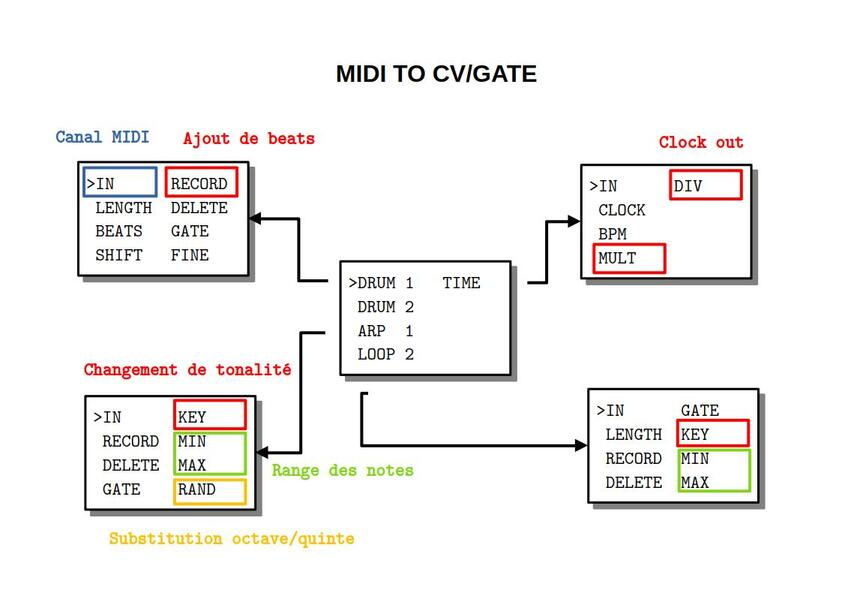

MIDI2CVGATE

PRÉSENTATION
Ce code permet d’utiliser une entrée MIDI sur le module MIDI2CVGATE pou générer des CV et GATE avec la possibilité d’enregistrer ce qui sort du clavier.
MODE D’EMPLOI
À la mise sous tension les leds s’allument à tour de rôle pendant que l’écran affiche pendant quelques secondes un message d’information :
MIDI
TO
CV/GATE
vx.y.z
suivi du numéro de version.
Pour choisir un des algorithmes installés, il faut tourner l’encodeur PARAMETER au-dessus de l’écran.
>DRUM 1 TIME
DRUM 2
ARP 1
LOOPER 2
Ce même encodeur PARAMETER permet ensuite d’afficher la liste des paramètres par simple pression et de sélectionner le paramètre qu’on souhaite modifier.
IN DIVIDE
CLOCK
>BPM
MULT
Une nouvelle pression permet de revenir à la liste des algorithmes.
Une fois le paramètre sélectionné, l’encodeur VALUE à gauche de l’écran permet d’en modifier la valeur. À noter qu’une rotation d’un seul cran de l’encodeur VALUE affiche la valeur sans la modifier. On modifie la valeur par rotation ou par pression suivant le type de paramètre.
IN DIVIDE
CLOCK
> 80
MULT
Reboot : une pression longue sur l’encodeur PARAMETER affichant la liste redémarre le module.
Program Change : le module réagit aux messages PC
Control Change : le module réagit aux messages CC dont le numéro de 2 à 8 est celui du paramètre sur le canal midi. Le numéro de canal midi ne peut être changé que manuellement.
ARP
Cet algorithme joue l’arpège des notes enregistrées. On peut l’utiliser comme séquenceur.
- IN canal MIDI en entrée (OFF, 1 à 16)
- RECORD enregistrement (ON/OFF par pression) des notes une à une
- DELETE efface les notes enregistrées
- GATE longueur en PPQN (1/6 de double croche) de 1 à 5
- KEY transpose à la volée en ajoutant un intervalle de 0 à 11 demi-tons à la note
- MIN ignore les notes dont le pitch est inférieur
- MAX ignore les notes dont le pitch est supérieur ou égal
- CHANGE probabilité en % de modifier aléatoirement des notes par leur quinte ou octave au dessus ou au dessous)
Les valeurs par défaut sont OFF, OFF, OFF, 2/6, C, C0, C5 et 0.
Remarques
- la longueur de l’arpège est égal au nombre de notes enregistrées
- les notes sont jouées à la double-croche
- un nouvel enregistrement s’ajoute au précédent
- lorsque la probabilité de jouer l’arpège vaut 0%, le choix de la note de substitution est uniforme sur les 5 possibilités
DRUM
Cet algorithme joue l’arpège des notes enregistrées. On peut l’utiliser comme séquenceur.
- IN canal MIDI en entrée (OFF, 1 à 16)
- LENGTH la longueur de la séquence en double croches
- BEATS nombre de beats dans la séquence
- SHIFT décalage en double-croches
- RECORD enregistrement (ON/OFF) de beats supplémentaires
- DELETE efface les beats ajoutés
- GATE longueur en PPQN (1/6 de double croche) de 1 à 5
- FINE avance/retard de 0 à 3 PPQN
Les valeurs par défaut sont OFF, 16, 4, 0, OFF, OFF, 2/6, 0.
Remarques
- un nouvel enregistrement s’ajoute au précédent
LOOPER
Cet algorithme enregistre et joue la boucle de notes entrées.
- IN canal MIDI en entrée (OFF, 1 à 16)
- LENGTH la longueur de la boucle en double croches
- RECORD enregistre les notes (ON/OFF par pression)
- DELETE efface toute la boucle
- GATE entre 1/6 et 5/6 de double-croche
- KEY transpose à la volée en ajoutant un intervalle de 0 à 11 demi-tons à la note
Les valeurs par défaut sont OFF, 16, OFF, OFF, 2/6 et C.
Remarques
- le jeu est quantifié en 24 PPQN
- les notes s’ajoutent à la séquence à chaque enregistrement
- le jeu est monophonique
TIME
Ce module gère la sortie d’horloge.
- IN numéro de canal MIDI pour les messages CC
- CLOCK envoie d’un signal interne (ON) ou réception MIDI (OFF)
- BPM indique le tempo pour l’horloge externe ou règle de tempo pour l’horloge interne entre 30 et 240 bpm
- MULT multiplie la vitesse du siganl de sortie par 2, 3 ou 4
- DIV divise la vitesse du siganl de sortie par 2, 3 ou 4
Les valeurs par défaut sont ON, 120, 1 et 1.
Remarques
- la sortie peut être utilisée comme métronome/kick
- le bpm affiché est entier ce qui signifie qu’il est arrondi pour un signal entrant et qu’il n’est pas possible de lui donner une valeur décimale lorsqu’il est généré
MISE À JOUR
En cas de :
- correction de bugs
- ajout de fonctionnalités
le dernier firmware au format Intel HEX sera toujours à votre disposition sur le site CIYLab.
Pour le développement de votre propre code, il est conseillé de retirer le micro-controleur et de le remplacer par le vôtre.
Vous pouvez notifier tout dysfonctionnement par email avec le protocole précis permettant sa reproductabilité à l’adresse contact@ciylab.com.
DONNÉES TECHNIQUES
Alimentation :
- Bus Eurorack : +12v 31mA
Dimensions :
- largeur : 12HP
- profondeur : 27mm
Librairies :
- MIDI Library 5.0.2
- SPI 1.0
- Versatile_RotaryEncoder 1.3.1
- U8g2 2.35.30
- Wire 1.0
Plateforme :
- arduino:avr 1.8.6
- arduino:megaavr 1.8.8
- thinary:avr 1.0.0